QQ聊天操作基础
九、远程协助 返回目录
远程协助是指对方可以看到你的计算机屏幕桌面，你还可以请求对方控制你的计算机，注意细心确认对方没有恶意后允许，下面我们来看一个练习；
1、登录QQ
1）双击桌面的QQ图标运行程序，出来一个登录面板，如果自动运行就不用点桌面图标了；

2）按照从上到下的顺序，输入自己的QQ号，这个比较安全些；

3）下面的自动登录和隐身登录可以先不勾，点击“登录”按钮，登录成功以后就可以显示出QQ面板来；
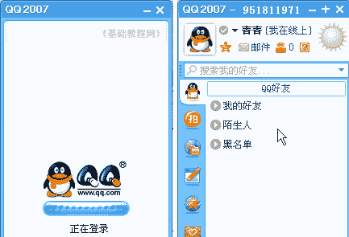
2、远程协助
1）在面板中找到好友，双击打开聊天窗口，在面板的上边有一排菜单，找到“应用”菜单；
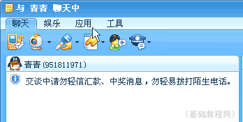
2）点击应用菜单，在下边的工具栏按钮里，找到一个带箭头的按钮，这个就是远程协助；
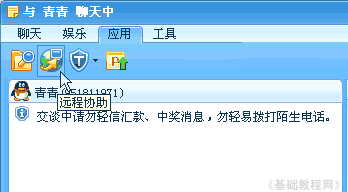
3）点击“远程协助”按钮，出来一个提示：“您已经请求进行远程协助”，如果有错误就点旁边的“取消”终止，
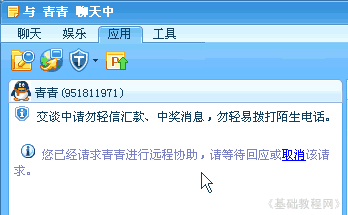
在对方的窗口里出来一个“接受”同意协助的提示，也可以点“取消”终止；
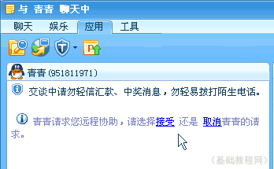
4）点“接受”链接，接下来出来一个确认协助的提示，再次点击“接受”确认同意远程；
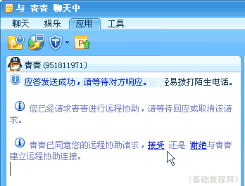
5）然后出来一个提示，对方已经可以看到你的桌面了，也就是你这儿的各项操作对方都可以看到，
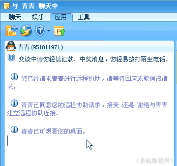
6）在好友那一面，他的窗口侧边栏会显示你的桌面情况，上边是一排工具按钮，有“释放、断开、浮动、全屏”；
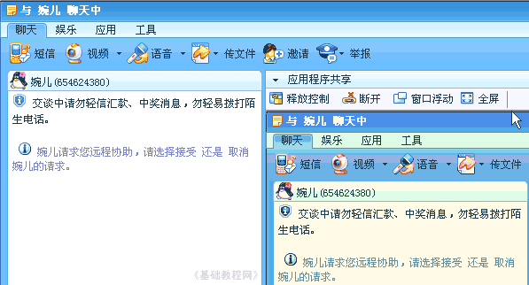
7）如果想让好友帮你操作，需要申请控制，在聊天窗口的侧边栏找到“申请控制”按钮，图标是一个手掌的；
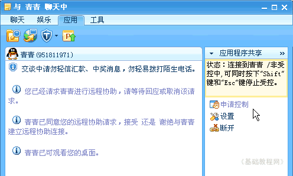
8）点击“申请控制”按钮，对方同意后，会再次出来一个“接受”的提示，点击后就可以控制了；
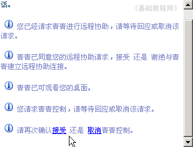
9）操作完了以后，点击右边侧边栏的“断开”按钮，就可以停止远程了；
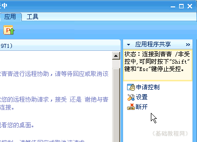
本节学习了使用QQ进行远程协助的基本方法，如果你成功地完成了练习，请继续学习下一课内容；
本教程由86团学校TeliuTe制作|著作权所有
基础教程网：http://teliute.org/
美丽的校园……
转载和引用本站内容，请保留版权信息和本站链接。